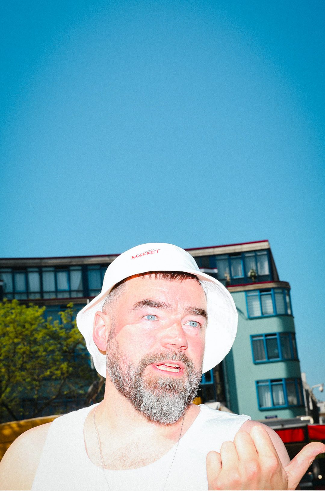

.market
A limited-edition drop shop for hotel merchandise, built around the energy of a market: discovery and impulse rather than standard e-commerce. A social campaign built anticipation around each release.


Product shot as street photography: the bucket hat drop.
